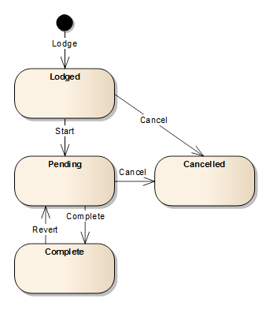

Cycle de vie d'un Service
Comme les demandes, les services existent sous différents statuts qui changent en fonction
des actions effectuées. Les actions s'appliquant aux services sont:
- Déposer – Cette action est déclanchée quand un nouveau service est sauvegardé pour la première fois.
L'action de dépôt marque le service avec le statut Déposé.
- Commencer – Pour comment à traiter un service, utiliser l'outil de Démarrage dans la bar d'outil
des services de demande. L'action de démarrage change le statut du service à Attente.
L'outil de démarrage est disponible quand la demande est assignée et un des services de la liste des
Services est sélectionné.
- Annuler – Si un service n'est plus requis ou inapproprié pour une demande,
le service peut être annulé en utilisant l'outil Annulation de la bar d'outil de l'écran service détails
de la demande. L'action annulation change le statut du service en Annulé. Noter que tous les
services doivent être de statut Annulé ou Exécutés avant que la demande soit approuvée.
L'outil Annulation est disponible quand la demande est assignée et un des services de la liste des
Services est sélectionné.
- Exécuter – Pour terminer le traitement du service, utiliser l'outil Exécution de la bar d'outil de l'écran on the
Service Détails de la demande. L'action Exécution exécute les règles métier pour le
service et change le statut en Exécuté si les règles métier ont été passées avec succès.
Noter que tous les services doivent être au staut Annulé ou Exécuté avant que la demande
ne soit approuvée. L'outil d'exécution est disponible quand une demande est assignée et un des services
de la liste des Services est sélectionnée.
- Revenir en arrière – Pendant le contrôle qualité ou l'approbation, si l'utilisateur détermines qu'un service
requiert plus d'attention, il est possible de revenir au statut précédent en utilisant l'outil de Retour en Arrière
de la barre d'outil Service Détail de la Demande. L'action de retour en arrière change le statut du service à son
précédent, En Attente, pour plus de traitement. L'outil de Retoue en Arrière est disponible quand la demande
est assignée et le service sélectionné a un statut Exécuté.
Le diagrame suivant de transition de statut diagram illustre le Cycle de Vie d'un Service et l'effect que les
différentes actions ont sur le staut du service.

Voir aussi